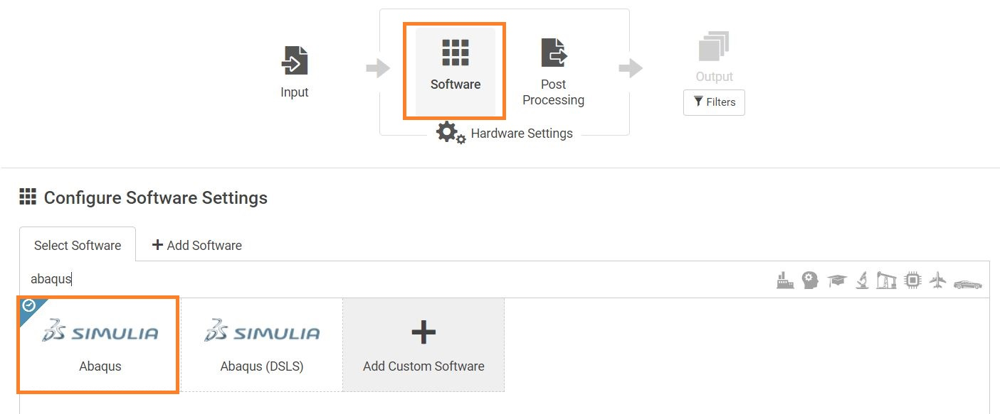
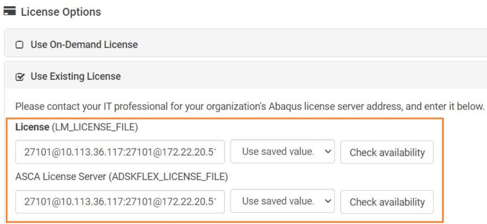
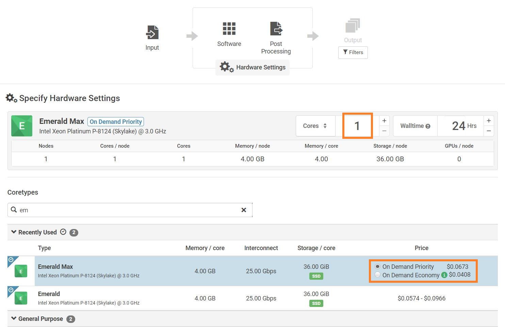
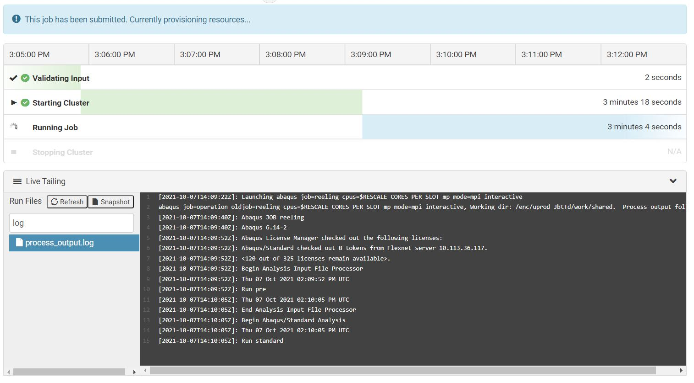
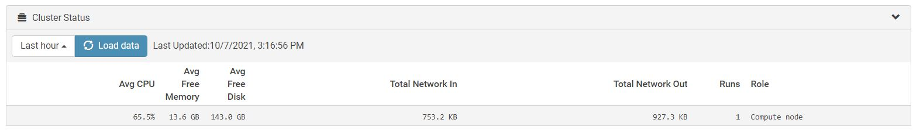

Running First Job
This example shows how to run a basic job on Rescale patform. The analysis software used is Abaqus 6-14-2. The example used is for the pipe-in-pip integrity analysis. This example only shows the workflow. The analysis files are not shared.
Go to https://platform.rescale.com/ and login with your login details. In the home screen you will see all the jobs that you have created and the jobs that have been shared with you. From the home scareen select Create New Job.
Input Files
Check that the Job Type is Basic.
Rename the Job with a unique name so that you can find it later.
Upload input files:
Using Upload from this computer individually.
Create a compressed file
.zipcontaining all the files.
{kind=link}
On completion, the Input Files setup page should show all the files uploaded.
Software Settings
In the next section select the abaqus software as shown below.
{kind=link}
Once Abaqus is selected the following window will appear that will ask you to specify version, terminal commands and licence.
- Version
User can use any abaqus version here. The versions are available form 6.13 to 2021 but ideally user should use the version that matches user’s system installation so that the generated files are compatible on the user’s computer.
- Commands
The default command is
abaqus job=<job> cpus=$RESCALE_CORES_PER_SLOT mp_mode=mpi interactive. Replace<job>with the input file you want to run (For examplejob=reeling.inp). You can leave the rest of the commands as is. You can add mutiple commands (including post-processing) here which will execute one by one.
{kind=link}
Note
All filenames should be in the lowercase. Rescale CentOS interface converts the filenames to lowercase and it will throw an input error if the filename do not match the name of the imported parameter files within the .inp files.
- Licence
Check Use Existing License button. The two licence servers available for TFMC Abaqus users:
27101@10.113.36.117and27101@172.22.20.51. You can add both servers to your job by adding a semicolon:in between. This will make abaqus search for licence on the second server if the first one fails.
{kind=link}
Error
Although not required but if you press Check Availability button, it will show that The license server is down or not responding. This is a bug in the system and you can safely ignore it.
Hardware Setting
For a basic job, there are following hardware settings to edit: Number of Cores, Core Type, Walltime and Price. The hardware settings you choose is reflected on the hourly price of the job.
{kind=link}
- Number of Cores
More cores you use, more costly the hardware would be and more license tokens would be used. Please choose prudently. For most jobs,
2 coresgive good performance. You can use lower number of cores if results are not required immediately for example if you are running the job overnight.Number of Cores
1
2
4
8
16
24
32
64
128
Number of Abaqus Tokens
5
6
8
12
16
19
21
28
38
- Core Type
This determines the speed per core. The availability depends upon the Abaqus version you selected. Based on the availability, the following selection order can be used to be cost effective.
Carbon > Emarald Max > Luna Max
Caution
Emarald Max allows you to specify minimum number of cores as low as 1. However the minimum number of cores on Luna Max is 24 and on Carbon is 44 which would make an expensive run and consume a lot of tokens. To reduce number of cores you can manually change the number of cores in the software settings command section. You can change cpus=$RESCALE_CORES_PER_SLOT to cpus=2 to use 2 cores insead of the default minimum.
- Walltime
This indicates the time limit on the job. If the job execution time exceeds the walltime then the job will be terminated. Please choose this based on the analysis expected runtime.
- Price
You will have either On Demand Economy, On Demand Priority, or both options depending on the hardware availability. For urgent tasks, select On Demand Priority to ensure dedicated hardware is alloted to your job. More details on can be found at https://docs.rescale.com/articles/on-demand-setting/
Selecting the On Demand Economy mode will submit your job into the run queue, but it may experience a moderate delay before the run is started. The benefit to running the On Demand Economy setting is a reduced price point as compared to the On Demand Priority mode.
– Rescale Documentation
Running and Monitoring
Reference Job: MqphW
The Review step shows a summary of the job prior to submission. If everything is satisfactory, click the Submit button to begin the job. Once submitted, the sidebar will show the following options:
- Status
This section shows the current status of the job. The server takes 4-5 minutes to start. After the job is started you can select and click
process_output.logfile to see the live command line output or.stafile to see the status of the current job.You can see the percentage of CPU usage under Cluster Status section. It will give you an insight if you have over or under specified the hardware for your analysis.
- Results
Once the job is completed or failed, results section will show all the generated files. Some of the files such as
.datfiles can be open in the browser but other files like.msgneed to be downloaded to the computer to view it.- Charts
This is a feature in Rescale that allows you to see selected output of the analysis as a table and chart. It requires a specific type of post processing script. See Results section for sample output.
{kind=link}
{kind=link}
Post Processing
You can add post-processing commands when giving commands in the software settings page.
{kind=link}
Error
Since Rescale interface purely relies on the command line arguments, Abaqus viewer will not open during the post processing script and the commands such as abaqus view script=post_processing_script.py will throw an error. Instead use noGUI keyword to instruct Abaqus to not open viewer and read the .odb file form the command line.